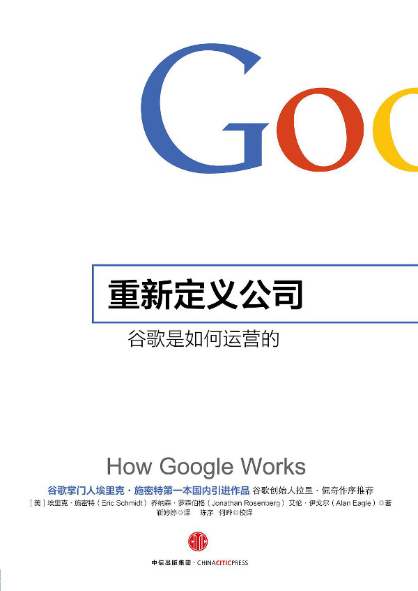

注：【】部分为笔者心得，非原文摘抄。
- 未来企业的成功之道，是聚集一群聪明的创意精英（smart creative），营造合适的氛围和支持环境，充分发挥他们的创造力，快速感知客户的需求，愉快地创造相应的产品和服务。
- 未来组织最重要的功能是赋能，而不再是管理和激励。
- 在可见的未来，机械性的、可重复的脑力劳动，甚至较为复杂的分析任务，都会被机器智能取代。
- 未来社会最有价值的人，是以创造力、洞察力、对客户的感知力为核心特征的。
- 物色善于独立思考的人，并设定远大的目标。
- 只求渐变，不求突破，时间一长，企业就会逐渐落伍，科技行业尤其如此。
- 要在产品品质上追求卓越，最佳的途径并非靠商业计划，而是要尽可能物色最顶尖的工程师，给他们空间让他们尽情发挥。
- 如果某行业产品主要要素的成本曲线下降，那么该行业并将会出现剧变。
- 如果产品乏善可陈，其劣势是市场营销和公关营造的品牌力量完全不足以反转的。
- 学习知识，只有融会贯通，才算真正学到手。——约翰·伍登
- 如果企业文化是自然生发的，那么意味着，你将对成功至关重要的因素交给了命运。
- 创始人是企业文化的源头，而创始人为实现大计而物色并信赖的团队，才是企业文化的最佳体现。
- 企业价值观应当简明扼要地阐述出企业最为重视什么以及企业成员最为关注什么。
- 如果你不能时常传达你的目标，不能通过奖励巩固你的目标，那么，你的愿景还不如打印愿景的纸有价值。——杰克·韦尔奇
- 在谈判中，如果你所代表的一方决意不妥协，那么你的立场就很容易守住。
- 记录公司独特地价值观以备未来的员工和合作伙伴参考，才是决定企业长远利益的重要因素。
- 占领地盘是人的天性，职场中也不例外。
- 办公室的设计应本着激发活力、鼓励交流的理念，而不要一味制造阻隔、强调地位。
- 要营造任人唯贤的环境，必须创造一种强调“质疑”的文化。
- 保持扁平。
- 减少管理层的监督并赋予员工更多自由。
- 谷歌坚持按照职能划分部门，将企业分为工程、产品、财务以及销售等部门，每个部门直接向首席执行官汇报。
- 以业务或产品线为基础的组织结构会造成“各成一家”的局势，从而对人员和信息的自由流动形成扼制。
- 每个部门自负盈亏的措施看似有利于衡量业绩，却会使各业务部门的领导者把自己部门的盈亏置于企业整体利益之上，从而对部门的发展方向造成误导。
- 重组过程中遵循几条原则：
- 第一，留意不同团队的不同倾向；
- 第二，把所有重组工作安排在一天内完成。
- 组织应由小规模的团队构成。
- 组织要以最有影响力的人物为中心。
- 不要把岗位或经验作为选择管理者的标尺，而要看他的表现和热情。
- 热情是卓越领导者与生俱来的特质。
- 你的头衔可以让你成为管理者，但让你成为领导者的，是你的员工。——黛比·碧昂多利洛
- 在面对企业内部的团队时应抱有这种态度：那些无论你是否批准都按自己的想法做事的人，才值得你投资。
- 在管理层的顶端，最有影响力的人应该是产品负责人。
- 在首席执行官召开的会议上，至少有一半与会者应是产品与服务方面的专家，负责产品研发。这样可以确保领导层将注意力放在卓越的产品质量上。
- 在物色领导者的时候，要挑选那些不会将一己之利置于企业整体利益之上的人。
- 一款产品的设计绝不应该带有企业组织结构的痕迹。
- 要把事情办好，就把任务交给忙人。
- 一家企业的品格是所有成员品格的总和。
- 在企业变革时期，你需要先找一批精明的人才。要找到一批精明的人，你就得先找到其中的一个。
- 风险投资家应永远遵守投团队而不投计划的准则。
- 成功的团队懂得如何发现计划中的瑕疵，并及时做出调整。
- 用基于技术洞见的创新方式解决重大难题，优化规模而非收入，让能影响每个人的优秀产品带动市场增长。
- 技术洞见是指用创新方式应用科技或设计，以达到生产成本的显著降低或产品功能和可用性的大幅提升。
- 找到一个具体问题的解决方案，然后想办法对这个解决方案加以拓展，这是寻找技术洞见的一个方法。
- 以技术洞见来支撑产品研发，你就能够避免被消费者的需求牵着鼻子走，生产出步人后尘的产品了。
- 全球扩张必须成为企业的基础核心。
- 现今的竞争日渐激烈，任何竞争优势都难以持久，因此你必须有一个“快速长大”的战略。
- 互联网时代最成功的领导者，是那些懂得如何创造平台并快速发展平台的人。
- 平台从本质上来说就是一套能够吸引供应商及用户群，从而形成多变市场的产品或服务。
- 成功的企业必须有可靠的赢利途径。
- 科技行业中的企业永远“只看平台，不看产品”。
- 在互联网时代，创建网络不仅仅是为了降低成本和方便运营，更是为了从根本上提高产品质量。
- 通过五把标尺来衡量搜索引擎的好坏：速度、准确、好用、全面、新鲜。
- 选择了开放，你虽然放松了控制权，却换来了规模和创新。
- 开放不但有助于吸收创意，也可以降低互补性元素的成本。
- 开放无关道德，开放往往是激发创意和降低成本的最好方式。
- 没有什么比全球平台更能改变世界。
- 如果你的工作只是击败那些和你套路基本相当的公司，那又何谈乐趣呢？——拉里·佩奇
- 必须以你的敌人为傲，这样，敌人的成功就能变成你自己的成功。——尼采
- 为你的竞争对手骄傲，但不要追随他们。
- 增长是重中之重。
- 迭代对战略至关重要。迭代必须快速，且必须以研究为基础。
- 许多企业的成功都从以下几点入手：
- 使用创新的方式解决问题；
- 利用这个解决方式快速成长与扩张；
- 成功很大程度上是以产品为基础的。
- 务必慎重选择一起制定战略的人，应当选择能力最强的创意精英，以及那些对于未来的改变有非凡见解的人。
- 边际成本曲线和平均成本曲线相较于平均成本曲线的最低点。
- 再多的战略也无法替代人才。
- 物色人才好似刮胡子：如果你不每天下功夫，别人就会看出来。
- 招聘目的应是尽可能吸引最优秀的人才，即便暂时没有与此人经验相匹配的空缺职位也应如此。
- 优质人才组成的员工团队不仅能做出令人满意的成绩，还能吸引更多优质人才的加入。
- 应该从一开始就设置较高的招聘标准，这样才能吸引高水平人才。
- 在企业急速发展带来的喧嚣中，人们往往难免在质量上妥协，而你的目标就是在招聘上严格把关，绝不妥协。
- 坚持、刚毅、认真以及专注，激情的这些特点绝不是简历上的辞藻堆砌出来的。
- 谷歌看好擅长运动的人。因为运动能教人如何从失败中重新站起来，或至少提供了许多这种锻炼人的机会。
- 在谈论自己的爱好时，人们往往会放下戒心，而你则可以利用这个机会更好地考察对方的个性。
- 招聘时不要太看重应聘者掌握了多少知识，而要重视他们尚未开发的潜力。
- 信息技术正在呈指数级发展，但人们对未来的直觉并不呈指数级跟进，而是线性的。——雷·克兹维尔
- 不关你是 20 岁还是 80 岁，只要停止学习，就说明你老了。坚持学习的人则永远年轻。人生中最大的乐事，莫过于保持头脑青春永驻。——亨利·福特
- 偏重专业而忽视智慧的做法完全是本末倒置，在高科技行业更是如此。
- 为每位员工创造不断学习新东西的机会，即便是不能为公司带来直接利益的技能和经验也要让他们接触，然后，鼓励他们把所学的东西付诸实践。
- 激情、智慧以及学习型思维模式都是招聘中不可或缺的参考条件，除此之外，性格同样至关重要。
- 优秀的人才无论是在清醒还是微醺时，都会待人和善。
- 应聘者是否有趣，与好的性格同等重要。
- 如果你不想和某人在凌晨 3 点的洗手间外偶遇，那就不要把这个人招进来，要不你一整夜都要守在办公室不敢出来了。——洛恩·迈克尔斯
- 员工不应该千篇一律，千篇一律恰恰是失败的温床。
- 如果你愿意冒险鼓励人才去尝试他们从未挑战过的任务，你就能得到一些非凡的俊才。
- 能力过人的应聘者在接受你的评估，同时也在对你进行审视。
- 第一印象是双向的。
- 从面试官的角度来说，面试的目的就是要形成自己的意见。这个意见不能模棱两可，要么行，要么不行。
- 在互联网时代，产品质量才是王道，因此，最高的报酬理应属于那些与卓越产品和伟大创意关系最密切的人。
- 想要留住创意精英，最好的办法就是避免让他们太过安逸，而是不断用新的想法保持他们工作的趣味性。
- 要想让员工全情投入、避免人才流失，只靠有趣的任务是不够的，还需要确保最有价值的员工的利益不受企业条条框框的制约。
- 想要挽留人才，首先要学会倾听。
- 要想避免解雇不得力员工的窘境，最好的办法就是不要把他们招进来。
- 谷歌招聘之行为准者
- 雇用那些比你更聪明、更有见识的人；
- 不要雇用那些不能让你有所收获也不能对你构成挑战的人。
- 雇用那些能对产品和文化带来价值的人；
- 不要雇用那些无法为产品和文化带来积极影响的人。
- 雇用那些做实事的人；
- 不要雇用那些只想不做的人。
- 雇用那些满腔热情、自动自发的人；
- 不要雇用那些只想不做的人。
- 雇用那些能启发别人且善于与人相处的人；
- 不要雇用那些偏爱自己单干的人。
- 雇用那些能随着团队和企业一同成长发展的人；
- 不要雇用那些枯燥乏味、不具备全面技能的人。
- 雇用那些多才多艺、兼有独特性兴趣和天赋的人；
- 不要雇用那些职位工作而活的人。
- 雇用那些道德高尚、坦诚沟通的人；
- 不要雇用那些趋炎附势、工于心计的人。
- 务必雇用优秀的候选人；
- 宁缺毋滥。
- 把行业视为你冲浪的地点，把公司当成你赶上的海浪。选择海浪最大最棒的地点，才是你明智的决策。
- 在正确的行业磨练技能要比在某家公司赌上自己的命运更加合算。
- 无论规模大小，处在哪个领域，业务永远向全球扩展，但人却天生具有地域性。因此，无论你身在哪里、来自何处，你都应该抓住一切机会走出去，到不同的地方工作和学习。
- 在外面的世界徜徉时，不要忘了从消费者的视角来审视这个世界。
- 人生最大的奢侈，莫过于从事富有激情的事业。这也是一条通往幸福的清晰路径。——谢丽尔·桑德伯格
- 做决策，是每家企业以及每位企业领导者的基本工作，而制定企业策略、聘请合适的人才、创立独特地企业文化，都是做决策的前提。
- 在互联网时代，企业的变化速度决定了决策必须快速。
- 必须明白，在制定决策的时候，不能一心只想做出正确的决定。制定决策的方式、时机和实施决策的具体方法，与决策本身同样重要。
- 把问题解释清楚，就等同问题解决了一半。——约翰·杜威
- 数据越详实，信息就越清晰易懂。
- 最了解数据的人，是那些工作在第一线的员工，而往往不是管理层。
- 作为领导者，要注意不要迷失在无法理解的细节中，而要信赖那些为你工作的人，相信他们会把问题搞明白。
- 收入能解决一切问题。
- “共识”并不是指人人都必须同意，而是指共同达成对公司最有利的决策，并围绕决策共同努力。
- 如果人人想的都一样，那就是有人没有思考。——巴顿
- 最好的决策应该是正确的决策，而不是竭力争取大家一致同意而找出的最低标准，也未必是领导人自己的决策。
- 积极寻找最佳途径，而不要一味坚持自己的意愿。——约翰·伍登
- 对于决策者而言，最重要的任务就是：设立最后期限，进行决策工作，按最后期限完成。
- 如果你不确定某种行为是否正确，那么最好的解决办法就是尝试，然后加以改进。
- PIA 准则：有耐心（Patience）、信息（Information）以及备选方案（Alternatives）。
- 在决心采取行动之前，应该尽可能长时间地静观其变。
- 不要成为紧迫感的奴隶。在最后一刻来临之前，都要保持灵活变通。
- 科技人员常会犯一个错误：我们总认为，如果我们的论点言之有理、考虑周全，且有真实数据和巧妙分析作为基础，那就自然能够改变别人的想法。
- 如果你想改变他人，不仅要晓之以理，更要学会动之以情。
- 要从感情上承认一个自己并不同意的决策，人们必须首先感觉到自己的观点不仅得到了倾听，还得到了重视。
- 一场组织混乱的会议，既浪费时间，又打击士气。
- 会议的组织准则：
- 会议应该有一位决策者或主持；
- 由资深的人担任决策者的角色；
- 决策者应当亲力亲为；
- 至少提前 24 小时传达议事日程，会议结束 48 小时内，决策者（不是别人）应该用电子邮件向每位与会者以及任何需要了解会议情况的人传达会议达成的决策以及待办事项；
- 即便是在信息共享或头脑风暴这种不必制定决策的会议上，也应明确指定会议的主人；
- 会议应该很容易取消；
- 会议规模应以便于管理为宜；
- 与会者最好不超过 8 人，10 人已算上限；
- 与会的每个人都应有权发表自己的意见，如果其他人必须要对会议结果有所了解，那么应该把会议结果传达给他们，而不是让他们来当会议的旁听者。
- 会议中如果有旁听者在场，会影响会议质量，还会让大家对畅所欲言有所顾虑；
- 出席必要的会议；
- 如果你的出席对会议不必要，那就退场，如果你可以在会前婉言谢绝，那就更好了；
- 一般而言，与会者越少，会议效果越好；
- 守时很重要；
- 确保会议准时开始、准时结束；
- 会议结束时，留出足够的时间总结会议要点和待办事项；
- 不要忘了预留出午餐和小憩时间，尊重身处不同时区的人，他们也希望能多花些时间与家人团聚；
- 开会时就认真开会；
- 企业领导者所能做的最重要的决策，就是如何分配自己的时间。
- 把 80%的时间花在 80%的收入上。——比尔·盖茨
- 管理团队往往会低估一款新产品上市后多长时间才能赢利。
- 企业赢利要靠核心业务。
- 必须把注意力和热情都集中在核心业务上。
- 热爱一项事业，就应该为离开它做好规划。
- 作为企业领导者，你需要自己的教练。
- 许多商业人士之所以能升至管理者位置，靠的并不是他们所表现出的团队合作精神，而是因为他们深谙与同事们的竞争之道。而这样的风气，只会助长人们对信息的霸占。——詹姆斯·奥图尔及沃伦·本尼斯
- 在互联网时代，雇用员工是让他们进行思考的。
- 在互联网时代中，金钱的确重要，但对于企业来说，信息才是真正的生命之源。
- 最有能力的管理者不但不独霸信息，还会分享信息。
- 力量并不来自掌握的知识，而是来自分享的知识。这一点，应该在企业的价值观及奖励机制中体现出来。——比尔·盖茨
- 领导者的目标，就是要时刻促进信息在整个企业中的流动。
- 心态开放，公开设立富有挑战性的目标。
- “共享一切”并不意味着“先剔除那些有可能损害公司形象或打击士气的信息，然后把剩下的信息进行共享”，而是指“除了极少数有违法律法规的信息，其它一概与大家共享”。
- 作为管理者，必须掌握细节。
- 为讲真话营造安全的环境。
- 身为领导者，最需要引起你注意的恰恰是坏消息。
- 作为领导者，必须习惯于苦口婆心、诲人不倦。
- 电子邮件原则：
- 迅速回复；
- 在写电子邮件的时候，每个字都很重要，冗长的堆砌则是多余的；
- 经常清理收件箱；
- 先处理后收到的邮件；
- 不要忘了，你是台路由器；
- 在你使用密件抄送功能时，问问自己为什么要这么做；
- 不要拿邮件泄愤；
- 要方便跟踪进度；
- 帮助未来的你更方便地搜索信息。
- 董事会成员应该讨论战略和产品，而不是管理方式和诉讼纠纷。
- 在不开董事会会议的时候，要定期打电话与董事们联络。
- 要营造成功的合作关系，必须认识到彼此之间的不同，还应承认和接受这些不同是无法根除的。
- 要做一个有思想的领导者，你就必须有自己的思想。——埃伦·韦斯特
- 如果一家企业的运营顺利，人员与职位之间一个萝卜一个坑，这说明企业已经被形式和结构缚住了手脚。
- 该赞美的时候，不要吝啬。
- 创新不只是创造新奇实用的想法，还包括实践。
- 创新的东西不仅要新颖、出人意料，还要非常实用。
- 适宜创新的环境是创新的先决条件。
- 如果你的目标是打造一个创新的环境，那你还是要去寻找那些具有巨大成长潜力的大型市场。
- 首席执行官必须兼任首席创新官。
- 有创意的人不需要别人来布置任务，而需要有人提供空间。
- “第一追随者”原则：在发起一个行动时，吸引第一个追随者是至关重要的一步。
- 要让企业获得持续的成功，除了依靠产品质量以外别无他法。
- 在互联网时代，人类拥有无限的信息连接性以及计算能力。但是，有太多的人仍然拘泥于老旧闭塞的思维方式。
- 提高产品质量，打造以用户为重的企业文化。
- 巨大的挑战往往是吸引以及留住创意精英的巨大磁场。
- 70/20/10 资源配置原则：将 70%的资源配置给核心业务，20%分配给新兴产品，剩下的 10%投在全新产品上。
- 资源上的稀缺，是激发创意的催化剂。
- 要以创意为准则，不要逢等级为圭臬。——史蒂夫·乔布斯
- 失败没什么大不了。
- 【把“成功”和“失败”等同地看作一件事情的阶段性反馈状态。】
- 最大的危险不在于误认为只有管理者才有好创意，认为创意只能来自公司的员工才是最危险的谬论。
- 完美是优秀的敌人。——伏尔泰
- 能交付才是真正的艺术家。——史蒂夫·乔布斯
- 沉没成本谬误：计算已经投入项目的资源，以此作为一个继续投资的原因。
- 要计划在上市后的适当时机为产品添加一款让人眼前一亮的功能。这样的做法可以让用户习惯于先接受功能有所局限但质量过硬的新品，然后再等着功能快速得到扩充的模式。
- 要想创新，就要学会把败仗打漂亮。
- 修改创意，而不要否决创意。
- 如果你的眼光够远大，那就很难全盘皆输。——拉里·佩奇
- 不要拿失败的团队问罪，而要确保他们能在公司里找到合适的岗位。
- 管理者的任务不是规避风险或防止失败，而是要打造一个不会因风险和无可避免的失误而垮台的环境。
- 良好的判断力来源于经验，而经验来自错误的判断。——穆拉·纳斯鲁丁
- 失败要尽快。
- 有时，只需提出最困难的问题，你就能避免来自企业的反对力量对创新和改变产生负面干扰。
- 把注意力放在那些非问不可的问题上，这样才能把握未来会出现的问题。——克莱顿·克里斯坦森
- 科技进步不可阻挡。要理性地跟随这一趋势，同时问问自己：当下的形势对我们而言意味着什么？
- 首席执行官不仅要考虑企业的核心业务，还要放眼未来；多数企业失败就在于安于现状，只做渐进改变。——拉里·佩奇
- 政府应鼓励破坏性创新。
- 创新始于教育。